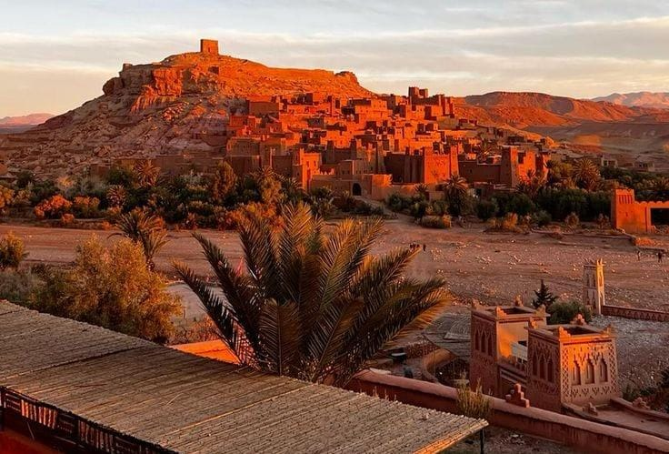
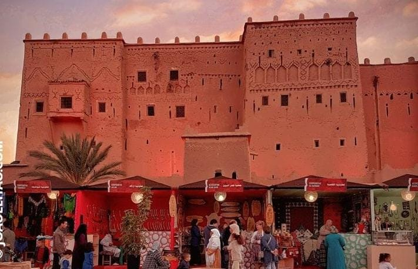
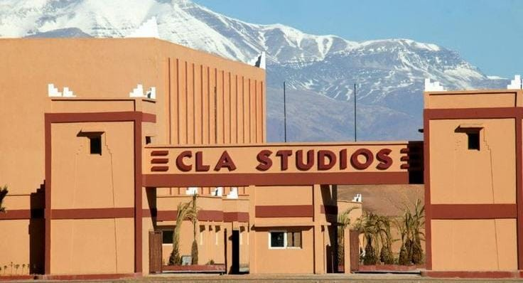
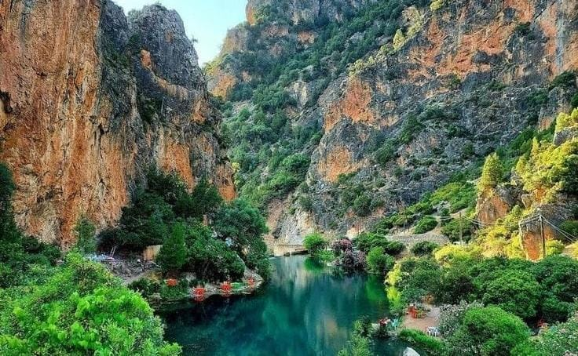

🏰 Aït Ben Haddou
Aït Ben Haddou est un ancien village fortifié
construit en terre. Il est connu pour son architecture
traditionnelle et ses magnifiques paysages.
🎯 Activités
- Explorer les ruelles de l'ancien Ksar
- Monter jusqu'au sommet pour admirer le paysage
- Découvrir l'architecture en terre
- Visiter les petits ateliers d'artisanat

🏯 Kasbah de Taourirt
La Kasbah de Taourirt est un monument historique
situé au centre de Ouarzazate. Elle représente
l'architecture traditionnelle du sud marocain.
🎯 Activités
- Visiter les anciennes salles de la Kasbah
- Découvrir l'histoire de la région
- Observer les décorations traditionnelles
- Faire une visite guidée

🎬 Studios de cinéma
Ouarzazate est connue pour son activité
cinématographique. La ville possède des studios
et des décors utilisés pour différents tournages.
🎯 Activités
- Visiter les décors de cinéma
- Découvrir les coulisses des tournages
- Voir les anciens décors et accessoires
- Découvrir l'histoire du cinéma à Ouarzazate

🌴 Oasis de Fint
L'Oasis de Fint est un espace naturel entouré
de montagnes. Elle est connue pour ses palmeraies,
ses paysages et sa nature.
🎯 Activités
- Faire une randonnée dans l'oasis
- Explorer les palmeraies
- Découvrir les villages et la vie locale
- Profiter d'une balade dans la nature